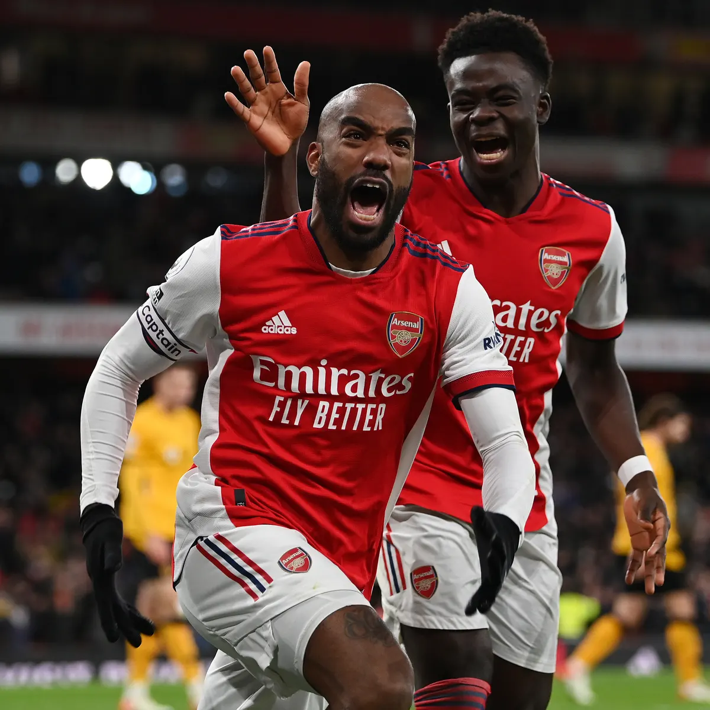

Kieran Tierney out for the Season Will the Gunners manage to make it into the top 4 without their first-choice LB?
 Lacazette Move Imminent as Striker Agrees Terms with Former Club Lyon welcomes Laca after scoring 71 goals in 205 appearnces for the Gunners.
Ben Foster Throws Name in Hat for Backup Keeper Speaking on his Fozcast podcast the free agent claims he's "at an age where I could be number two."
Osimhen Interest Cools as Arsenal Eye Jesus Napoli's price tag for Nigerian striker leaves Arsenal to focus on the Man City forward
Tielemans Emerges As Top Midfield Priority Leicester looking for €35-€40 million for the highly-rated Belgian midfielder.
Mohamed Elneny Signs New Contract The Egyptian midfielder extends his stay with the Gunners signing a one-year deal with an option for a further 12 months.